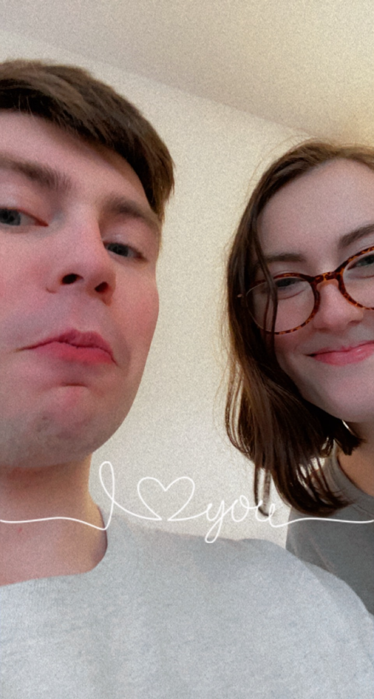

You know that's actually one of my favorite inside jokes that we have.
I know it took long enough but I got you flowers! I looked all over target for peonies but I couldn't find any and these roses were the closest I could find.
I'm not entirely sure what to talk about, I just had my big interview day today and honestly my brain is fried. But I wanted to make this because to me its important.
I just came back from target too. I got you a fun card that I thought was pretty damn funny and a book by notorious RBG
I hope you haven't read it before, I don't know if you have but if not then I think you'll like it.
It reminded me of you when I saw it because she was a woman who stood up for her rights and the rights of women in America and I know that that is a passion of yours.
 I made you this! I know I'm not very good at painting but I think it came out really well and I'm proud of it.
I made you this! I know I'm not very good at painting but I think it came out really well and I'm proud of it.I missed just being able to hold your hand or have my arm around you and just walk for a bit.
 I'm not entirely sure when or why we took this but I like and I saved it on snapchat for a reason.
I love you so much!
 This is what I'd say if you told me otherwise!
This was a really fun day and I had a wonderful time with you.
This is what I'd say if you told me otherwise!
This was a really fun day and I had a wonderful time with you.There's nobody else Id rather spend my birthday with.
And the view wasn't bad either! I'll let you decide which view I'm talking about ;)
 New hair who dis?? Going all dark on me now! But that's okay because I like it!
New hair who dis?? Going all dark on me now! But that's okay because I like it!Plus getting to kiss my favorite girl... what could be better??
 This is gonna be us in the future and honestly I wouldn't have it any other way.
This is gonna be us in the future and honestly I wouldn't have it any other way.Except the man isn't wearing slippers so I'm not too sure about that... maybe Nala ate his!!!
 Who's that cutie! Just vibing in front of Old Chapel like you do.
Who's that cutie! Just vibing in front of Old Chapel like you do.Looking mighty fine I might add, I highly recommend more photoshoots.
I just like looking at you :)